WorkSpaces用GPOの作成・適用・運用
仕様
構成・動作
- WorkSpaces固有設定を
Default Domain Policyへ追加しない - お客様管理OU
ad配下に、お客様作成GPOをリンクする - GPO本体の既存設定とリンク範囲を確認した後に対象OUへ直接リンクする
- 適用だけを止める場合は、GPO本体を残してリンクを無効化または削除する
- GPO本体を削除する場合は、お客様作成GPOだけを対象にし、バックアップと全リンク先を確認する
- AWSが作成・管理するGPOを変更、削除またはリンク解除しない
| GPO | 用途 | 最終状態 |
|---|---|---|
Amazon WorkSpaces DCV Policy |
お客様が作成・管理するDCV固有設定 | WorkSpaces OUへ直接リンクして継続利用 |
WorkSpaces-Computer-Policy |
GPO管理操作の確認 | リンク・順序変更・削除を確認後に削除 |
WorkSpaces-User-Policy |
利用者向け設定 | ユーザーOUまたはループバック設計後に別途作成 |
Windows WorkSpacesの管理テンプレート、適用できる設定および注意事項はWorkSpaces PersonalでWindows WorkSpacesを管理するを参照してください。
Amazon WorkSpaces DCV PolicyはAWS Managed Microsoft ADの作成時に自動作成されるGPOではありません。本手順でお客様が作成し、管理するGPOです。既に存在する場合は新規作成せず、GPO名、設定、所有者、全リンク先および変更申請を照合してから使用します。
管理範囲
コンピューター設定はWorkSpaceのコンピューターオブジェクトが所属するad\Computers\WorkSpacesへリンクします。ユーザー設定は利用者のユーザーオブジェクトが所属するOUへリンクします。WorkSpaces利用者だけに限定する場合は、専用ユーザーOU、セキュリティフィルター、または設計済みのループバック処理を使用します。
WorkSpacesコンピューターOUへリンクするGPOは、ドメインユーザーのパスワード有効期限を変更するためのGPOではありません。ドメインの既定パスワードポリシーと、対象ユーザーへ割り当てたきめ細かなパスワードポリシーを別に管理します。
制約事項
同じOUのリンク順序は1が最優先です。継承・強制・フィルターも適用結果に影響するため、代表WorkSpaceで確認します。検証用GPOの作成・順序変更・削除は任意の運用確認です。
構築作業
1. DCV管理テンプレートを中央ストアへ配置する
中央ストアは次のパスです。
\\ad.example.com\SYSVOL\ad.example.com\Policies\PolicyDefinitions既にPolicyDefinitionsがある場合は、フォルダー全体を作り直したり、ローカルのフォルダー一式で上書きしたりしません。対象ファイルだけを版管理して追加します。
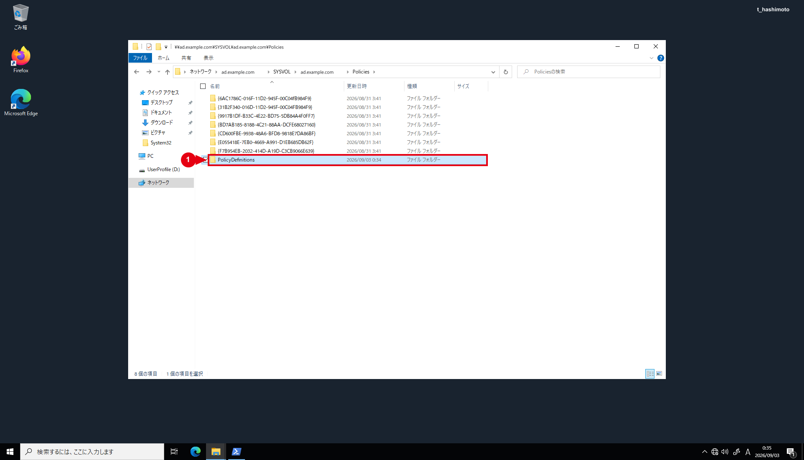
パイロットWorkSpaceからwsp.admxを次へコピーします。
コピー元：C:\Program Files\Amazon\WSP\wsp.admx
コピー先：\\ad.example.com\SYSVOL\ad.example.com\Policies\PolicyDefinitions\wsp.admx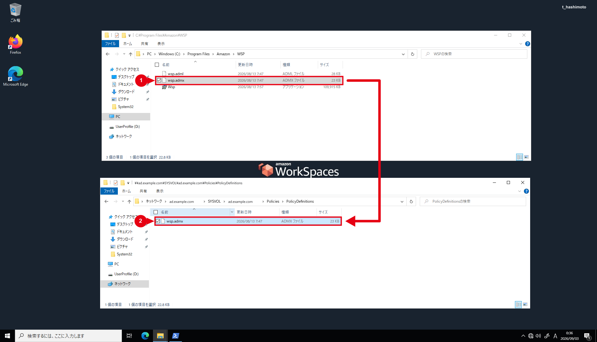
PolicyDefinitionsが未作成の場合は、中央ストアで使用するWindows用テンプレート一式を準備してから作成します。既存ストアがある場合は対象のDCVファイルだけを追加・更新します。
PolicyDefinitions配下に言語フォルダーen-USがあることを確認します。存在しない場合は同名のフォルダーを作成します。
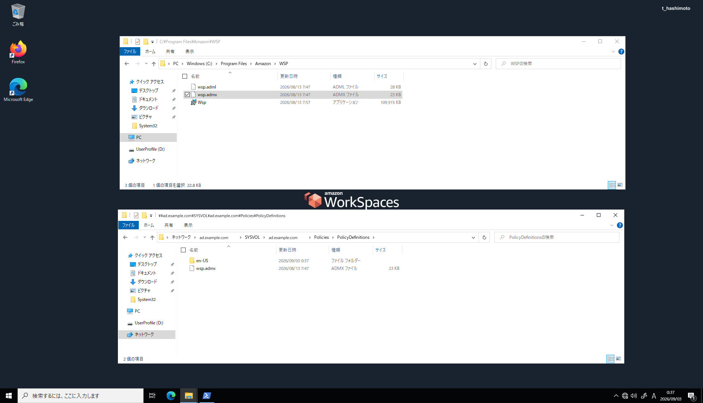
wsp.admlを次へコピーします。
コピー元：C:\Program Files\Amazon\WSP\wsp.adml
コピー先：\\ad.example.com\SYSVOL\ad.example.com\Policies\PolicyDefinitions\en-US\wsp.adml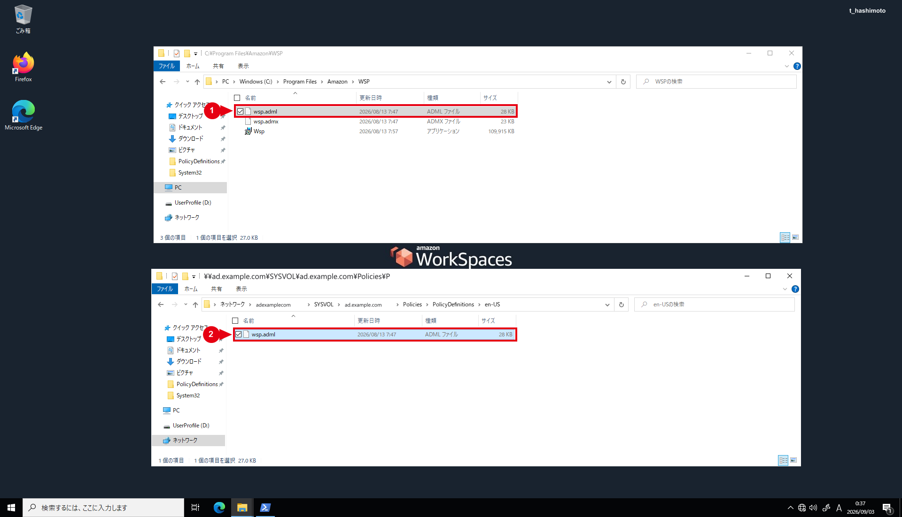
⚠️ 注意：中央ストア全体を置換しない
中央ストアは同一ドメインのGPMC利用者が共有します。既存ファイルを削除せず、追加するファイルの取得元、更新日時およびバージョンを確認します。
中央ストアの準備はグループポリシー管理用テンプレートの中央ストアを参照してください。
2. DCV用GPO本体を準備する
- GPMCで対象ドメインの「グループポリシーオブジェクト」を開き、
Amazon WorkSpaces DCV Policyの有無を確認します。 - 既に存在する場合は、GPOの「スコープ」と「設定」を開き、全リンク先、セキュリティフィルター、WMIフィルターおよび既存設定を確認します。別用途の同名GPOやAWS管理GPOとして扱われている場合は操作を中止します。
- 存在しない場合は「グループポリシーオブジェクト」を右クリックし、「新規」を選択します。
- 名前へ
Amazon WorkSpaces DCV Policyを入力し、「ソース スターターGPO」は「なし」のまま作成します。
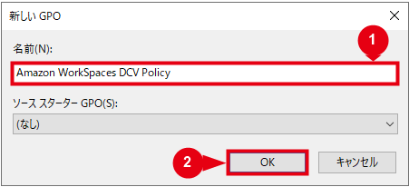
本図は名前を入力する画面です。直前の手順では「グループポリシーオブジェクト」から「新規」を選択し、GPO本体を作成します。
- 作成直後はリンク先がなく、設定が未構成となっていることを確認します。後続の「DCV用GPOをWorkSpaces OUへリンクする」でリンク先を設定し、「DCV設定を反映する」で設定します。
⚠️ 注意：既存の同名GPOを上書きしない
同名GPOが存在する場合は、そのGPOを本手順で新規作成しません。既存のリンク先や設定が本書と異なる場合は、影響範囲を確認して変更内容を再承認します。
3. DCV管理テンプレートの表示を確認する
Amazon WorkSpaces DCV Policyを編集し、次を展開します。
コンピューターの構成
└─ ポリシー
└─ 管理用テンプレート
└─ Amazon
└─ WSPAWS資料ではDCV、GPMCのテンプレート名ではWSPと表示される場合があります。Amazon > WSPの設定一覧を確認します。
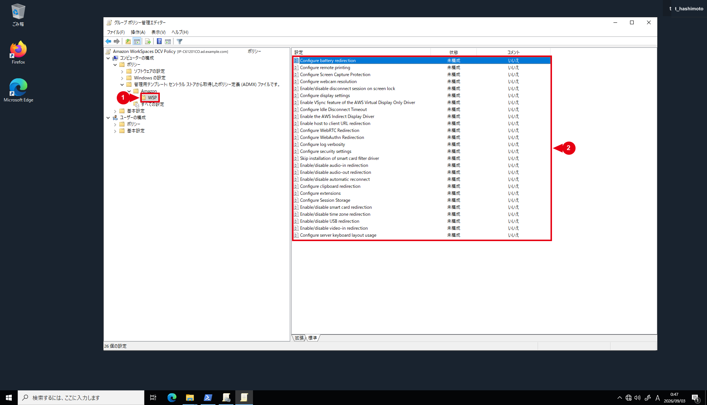
図6の全項目が「未構成」の場合、この画面で確認できるのはテンプレートの読み込みまでです。設定値の反映は後続の図15～17で確認します。
4. DCV用GPOをWorkSpaces OUへリンクする
最初にWorkSpaces OUへ対象GPOを直接リンクし、リンクが有効となっていることを確認します。親OUad側に同じGPOのリンクが存在する場合だけ、他の子OUへの影響を確認したうえで親OU側のリンクを削除します。
WorkSpaces OUへ直接リンクする
- GPMCで
ad\Computers\WorkSpacesを右クリックします。 - 「既存のGPOのリンク」を選択します。
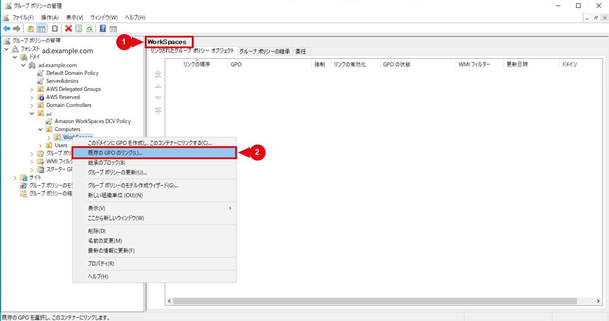
Amazon WorkSpaces DCV Policyを選択して「OK」を選択します。
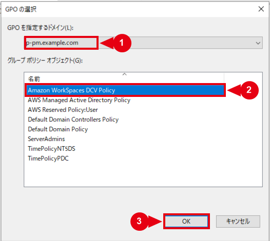
- WorkSpaces OUのリンク一覧で、「リンクの有効化」が「はい」、「強制」が「いいえ」、WMIフィルターが「なし」となっていることを確認します。
- セキュリティフィルターは
Authenticated Usersとします。
親OUのリンクだけを削除する
- WorkSpaces OU側の直接リンクが有効となっていることを確認します。
- 親OU
adに同じGPOの直接リンクがあるかを確認します。リンクがない場合は削除操作を行わず、「GPO本体のスコープを確認する」へ進みます。 - 親OUにリンクがある場合は、
ad配下の子OUとコンピューターを確認し、WorkSpaces OU以外でこのGPOを継承している対象がないこと、または継承を止めても影響がないことを確認します。ほかの子OUや端末がこのGPOを必要としている場合は、親OUのリンクを削除せず、対象別のリンク設計を再検討します。 - 影響がないことを確認できた場合だけ、親OU
ad直下に表示されるAmazon WorkSpaces DCV Policyのリンクを右クリックし、「削除」を選択します。
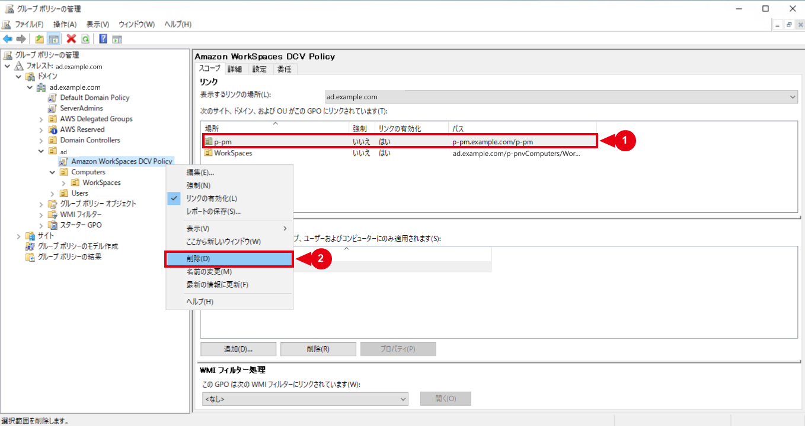
- 確認メッセージに「この操作ではGPO自体は削除されません」と表示されていることを確認して「OK」を選択します。
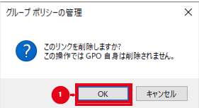
- GPO本体が残り、WorkSpaces OUに同GPOの直接リンクが1件あることを確認します。
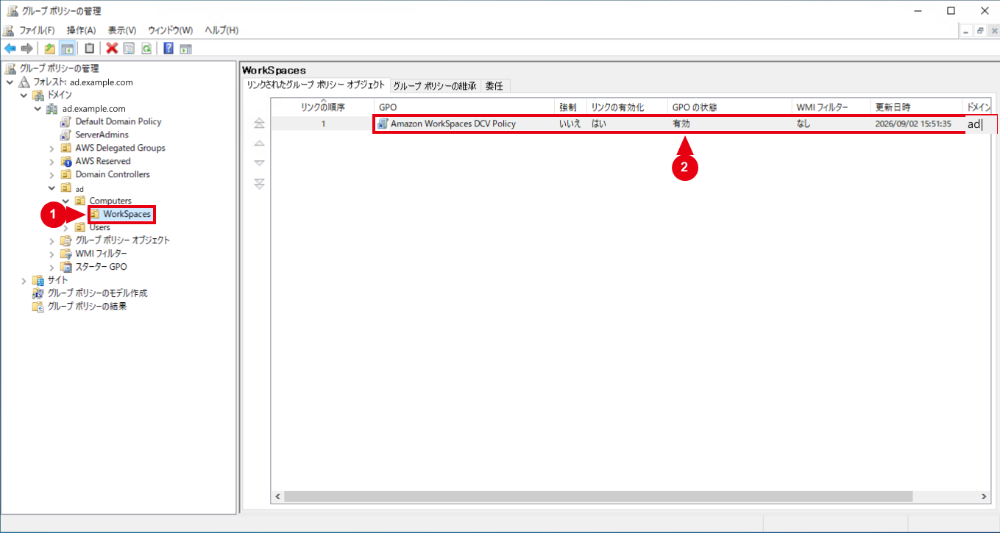
「リンクの有効化」がチェック済みの場合は押し直しません。押すとリンクが無効になります。リンクの削除とGPO本体の削除は別の操作です。
GPO本体のスコープを確認する
- 「グループポリシーオブジェクト」配下の
Amazon WorkSpaces DCV Policyを選択します。 - 「スコープ」を開き、リンク先が次の1件だけとなっていることを確認します。
ad.example.com/ad/Computers/WorkSpaces- 強制なし、リンク有効、
Authenticated Users、WMIフィルターなしを確認します。
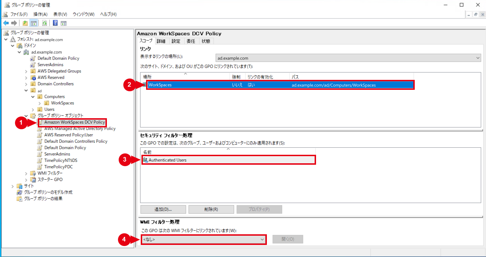
詳細レポートでも、GPO本体、リンク先とセキュリティフィルターを照合できます。
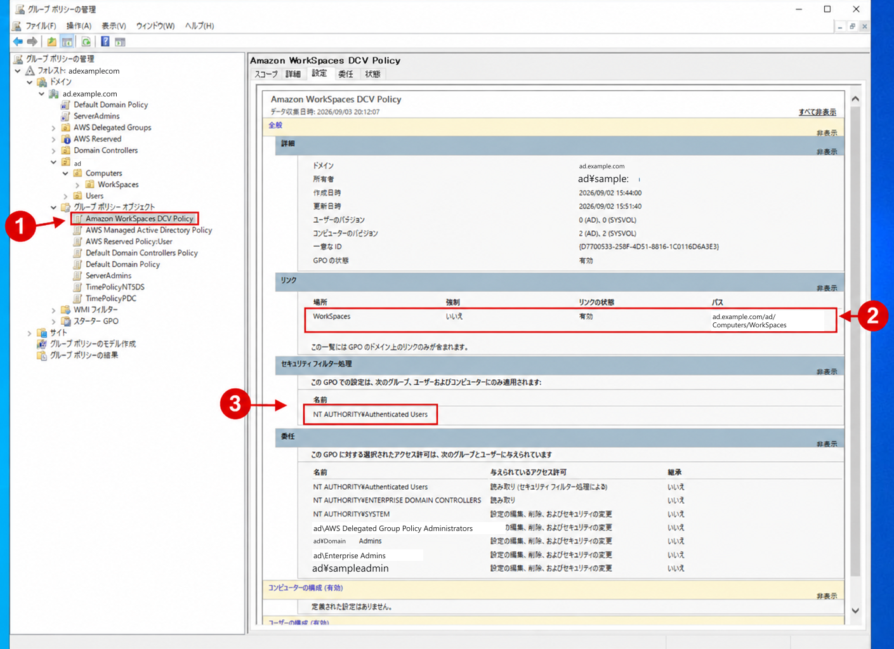
図14はドメインルートへ直接リンクされたGPOとリンク順序の確認例です。WorkSpaces専用GPOのリンク先は、WorkSpaces OUで確認します。
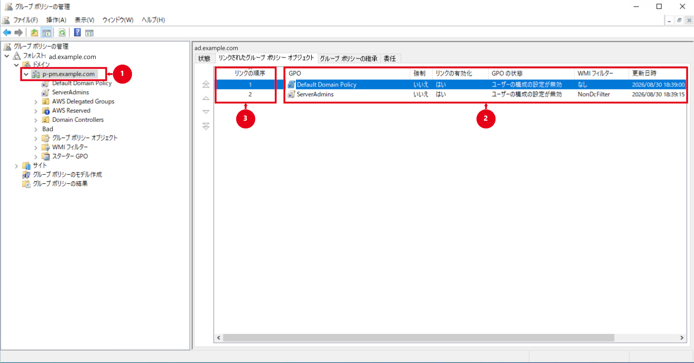
Default Domain PolicyへAmazon\WSP設定を追加していないことも確認します。
5. DCV設定を反映する
Amazon WorkSpaces DCV Policyを編集し、Computer Configuration\Policies\Administrative Templates\Amazon\WSPのConfigure clipboard redirectionを開きます。
- 「有効」を選択します。
- オプションを
Copy and Pasteにします。 - 「適用」、「OK」の順に選択します。
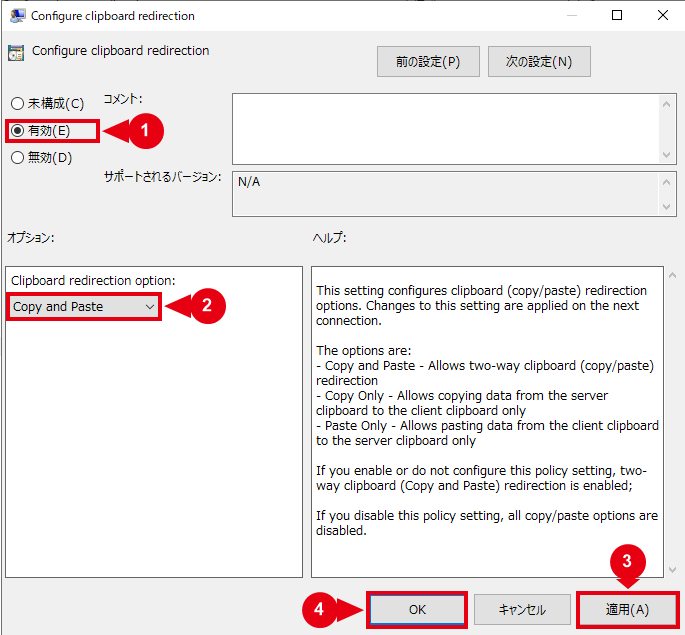
設定一覧で、Configure clipboard redirectionだけが「有効」となっていることを確認します。

GPO本体の「設定」で、Configure clipboard redirectionが「有効」、Clipboard redirection optionがCopy and Pasteとなっていることを確認します。
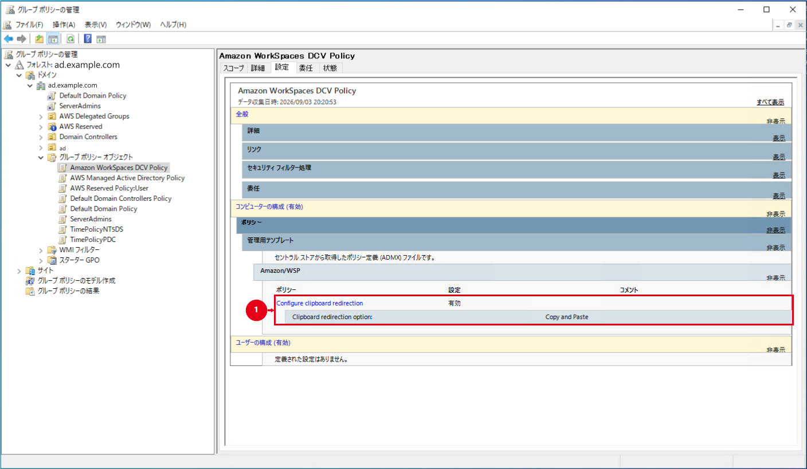
Copy and Pasteでは双方向のコピー＆ペーストを許可します。GPMCの設定値、gpresultの適用GPO名と、接続後のコピー＆ペースト動作を確認します。
6. GPO適用結果を確認する
代表WorkSpaceで管理者PowerShellまたはコマンドプロンプトを開きます。
gpupdate /force
gpresult /scope computer /rgpupdateでコンピューターとユーザーポリシーの更新成功を確認します。図18では、コンピューターのOUがad\Computers\WorkSpacesで、適用GPOにAmazon WorkSpaces DCV Policyがあり、検証用のWorkSpaces-Computer-Policyがないことを確認します。
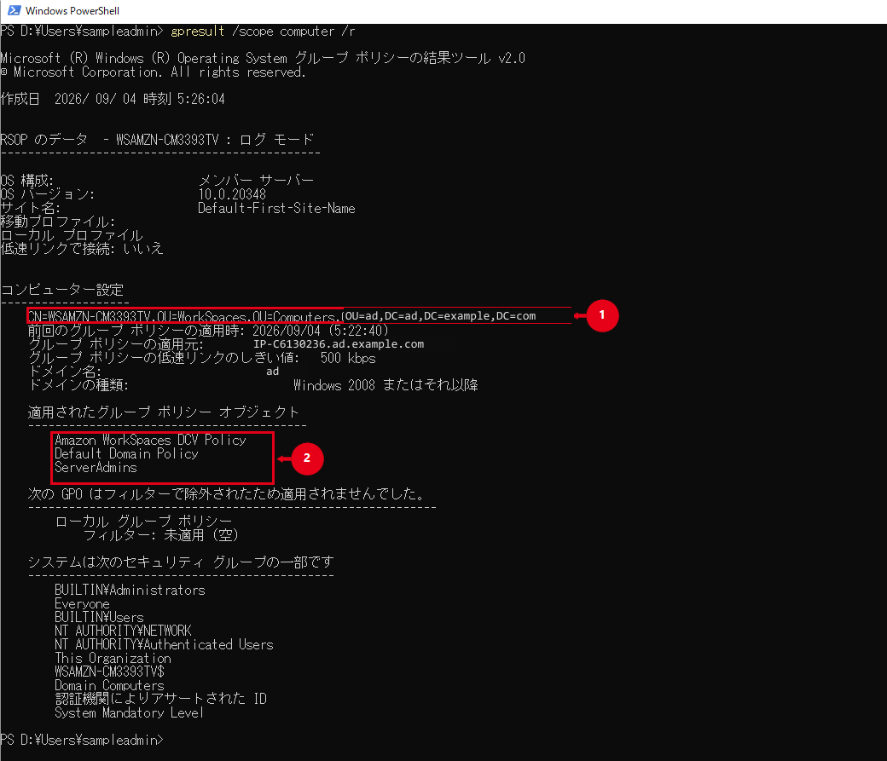
適用されない場合は、gpresultの拒否理由とイベントビューアーのMicrosoft\Windows\GroupPolicy\Operationalを確認します。Active DirectoryとSYSVOLのレプリケーション待ち、セキュリティフィルター、WMIフィルター、空のGPOおよびアクセス拒否を切り分けます。
多数のWorkSpacesは、通常のグループポリシー更新で順次反映されます。gpupdate /forceは代表端末での即時確認や障害調査に使用し、全台へ手動で繰り返し実行しません。
DCV設定の動作確認はポリシー更新後にセッションを終了して再接続してから行います。必要に応じて作業時間内にWorkSpaceを再起動します。
運用作業
1. 検証用GPOで管理操作を確認する（任意）
ℹ️ 情報：検証用GPOを使用する場合
以下はGPO管理操作を確認する場合だけ実施します。空のWorkSpaces-Computer-Policyを作成し、リンク・順序変更・削除まで完了します。通常のDCV用GPO構築だけの場合は省略できます。
検証用GPO本体の作成
WorkSpaces-Computer-Policyは、GPO本体の作成、リンク、リンク順序変更、リンク解除および削除という管理操作を確認するための一時GPOです。設定値は追加しないため、ポリシーの機能適用を検証するGPOではありません。承認済みの作業時間内だけ使用し、本書の削除手順まで同じ作業で完了します。
gpmc.mscを起動します。- 対象ドメインの「グループポリシーオブジェクト」を右クリックし、「新規」を選択します。
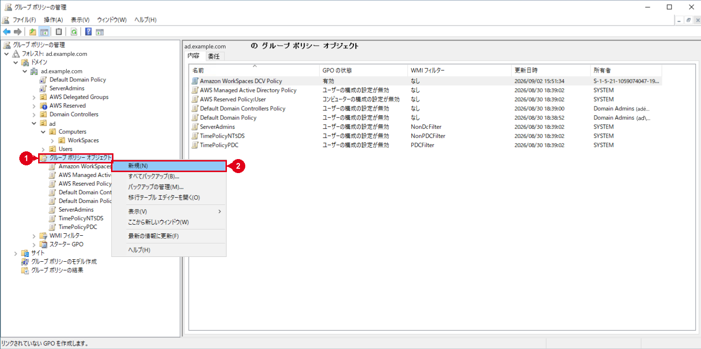
- GPO名へ
WorkSpaces-Computer-Policyを入力します。 - 「ソース スターターGPO」は「なし」のまま「OK」を選択します。
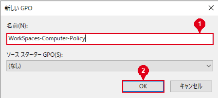
- GPO本体が作成され、「スコープ」のリンク一覧が空となっていることを確認します。
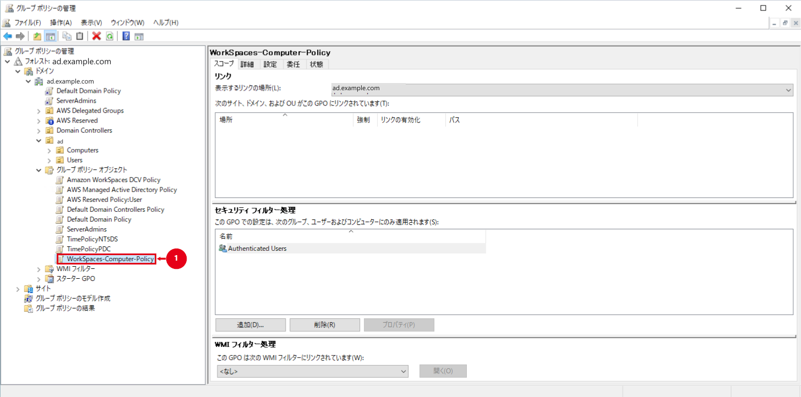
本体作成時は「グループポリシーオブジェクト」から「新規」を使用します。GPOの作成とOUへのリンクを分け、後続手順でリンク先を明示的に選択します。
検証用GPOのリンク
WorkSpacesOUを右クリックし、「既存のGPOのリンク」を選択します。
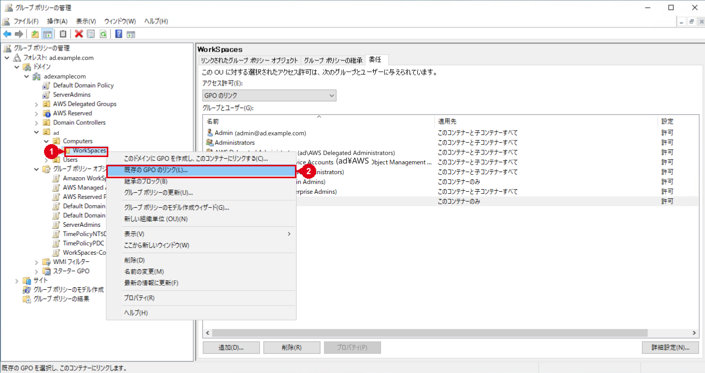
WorkSpaces-Computer-Policyを選択して「OK」を選択します。

GPOの適用順序変更
同じOUに複数GPOをリンクした場合は、競合する設定がないことを確認してから順序を変更します。
WorkSpacesOUのリンク一覧で、Amazon WorkSpaces DCV Policyが順序1、WorkSpaces-Computer-Policyが順序2となっていることを確認します。
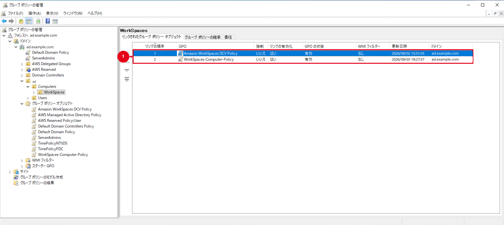
WorkSpaces-Computer-Policyを選択し、「リンクを上に移動」を選択します。
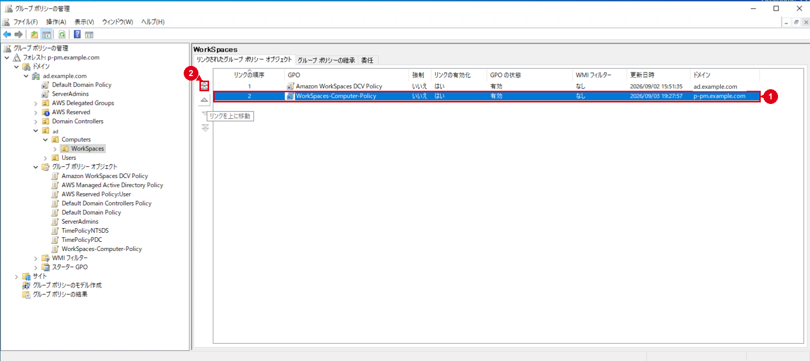
WorkSpaces-Computer-Policyが順序1、Amazon WorkSpaces DCV Policyが順序2になったことを確認します。
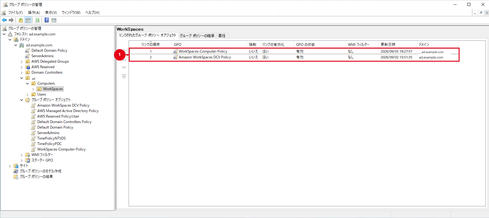
同じコンテナーにリンクされたGPOは、リンク順序1が最も高い優先度です。ただし、実効値はサイト、ドメイン、OU、継承、強制、セキュリティフィルターおよびWMIフィルターの影響を受けるため、代表端末のgpresultで確認します。
検証用GPOの削除
本節で削除するのはWorkSpaces-Computer-Policyだけです。AWSが作成・管理するGPOと、継続利用するAmazon WorkSpaces DCV Policyは削除しません。
WorkSpaces-Computer-Policyの全リンク先とセキュリティフィルターを確認します。- 必要な保持期間に従ってGPOをバックアップします。
- GPO本体を右クリックして「削除」を選択します。
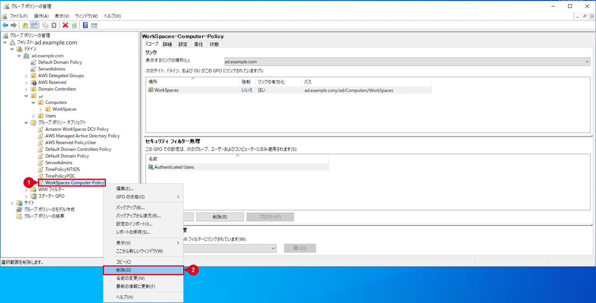
- 確認メッセージに、GPO本体とドメイン内のリンクが削除される旨が表示されていることを確認し、「はい」を選択します。

- 「グループポリシーオブジェクト」一覧から検証用GPOが消えたことを確認します。
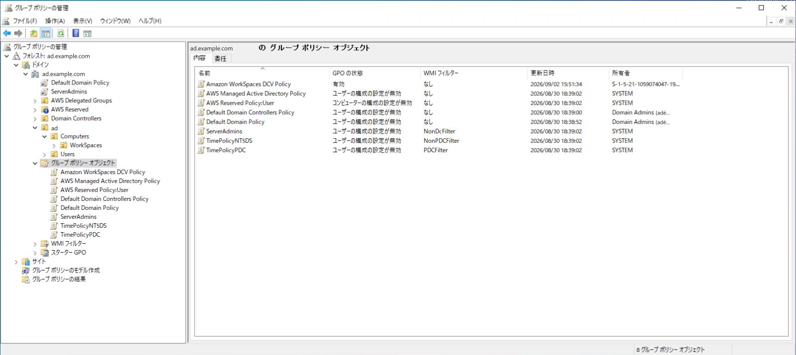
- WorkSpaces OUのリンク一覧に
Amazon WorkSpaces DCV Policyだけが残っていることを確認します。
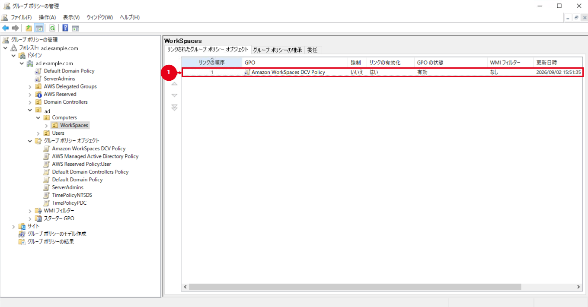
特定OUへの適用だけを止める場合は、GPO本体を削除せずリンクを削除します。GPO本体を誤って削除した場合は追加変更を停止し、バックアップから復元して必要なOUへ再リンクします。
2. 既定GPOのスコープと継承を参照する
GPMCでDefault Domain Policyを選択し、「スコープ」を開きます。リンク先、リンクの有効化、強制、セキュリティフィルターおよびWMIフィルターを参照します。AWSが管理するGPOの設定やリンクは変更しません。
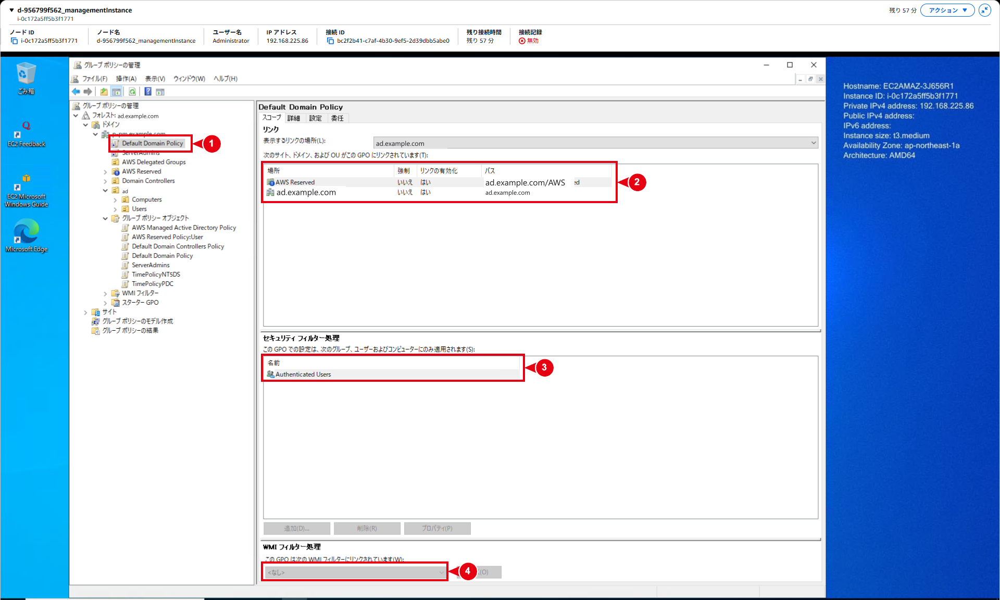
取得時の画面では、ドメインとAWS Reservedへのリンク、Authenticated Usersのセキュリティフィルター、WMIフィルター「なし」が表示されています。これはスコープの確認例です。個々の端末への適用結果は、前節のgpresultで確認します。
GPMCでDomain Controllersを選択すると、AWS管理GPOと時刻同期GPOを参照できます。設定やリンクは変更しません。
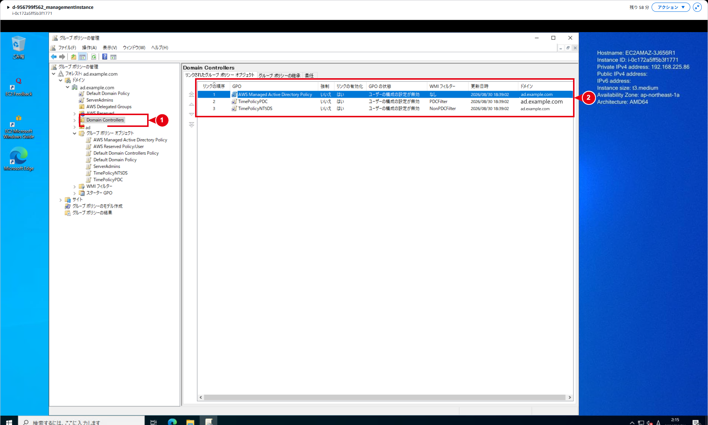
adの「グループポリシーの継承」では、Default Domain PolicyとServerAdminsの継承を確認できます。WorkSpacesの実効設定はWorkSpaces OUと対象端末で確認します。
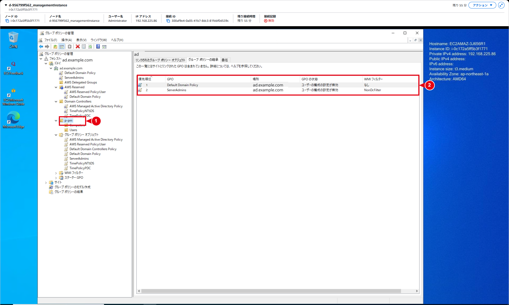
3. 設定を切り戻す
新規に追加した設定値だけを戻す場合は、対象設定を「未構成」へ戻し、GPMCの「設定」、gpupdateおよびgpresultで反映を確認します。変更前に設定値が存在した場合は、その値へ戻します。適用だけを止める場合は、WorkSpaces OUのリンクを無効化または削除し、GPO本体を保持します。